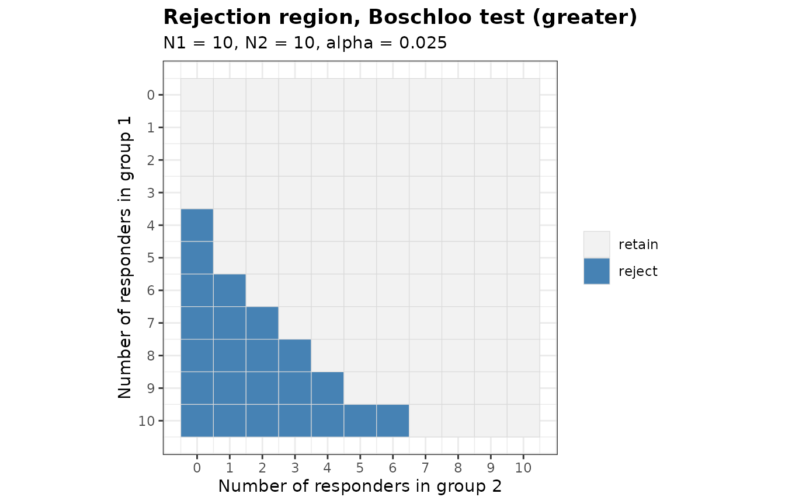
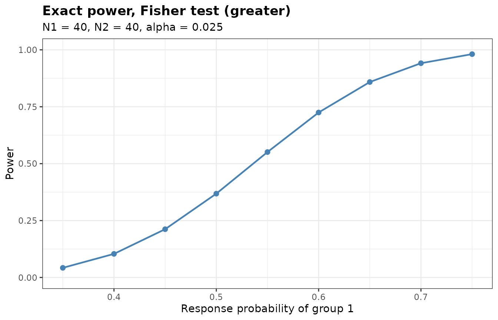
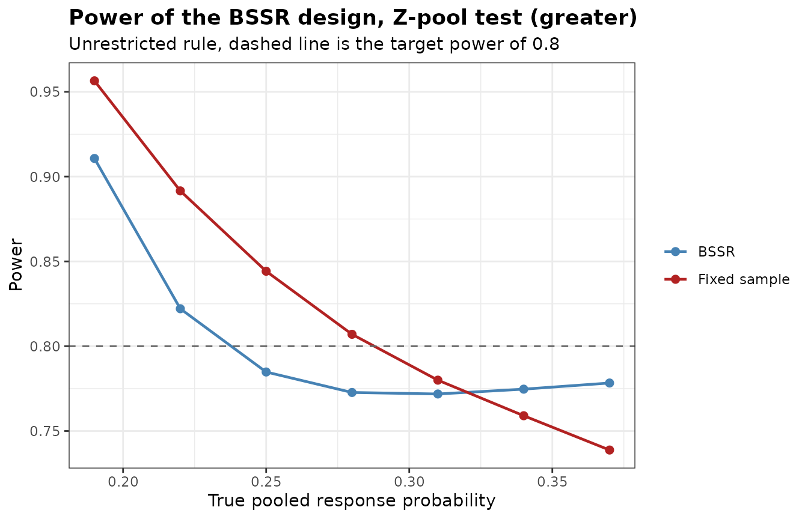

Introduction to bbssr
Gosuke Homma
2026-10-06
Source:vignettes/bbssr-introduction.Rmd
bbssr-introduction.RmdWhat the package does
A trial with a binary endpoint needs an assumed response probability in each group before the first patient is enrolled. If the pooled response probability turns out to differ from what was assumed, the trial ends up either underpowered or larger than it needed to be. Blinded sample size re-estimation addresses this by looking at the pooled number of responders partway through the trial and adjusting the remaining enrolment, without ever splitting the data by treatment group.
The package covers the whole chain of calculations that this
requires. Everything rests on BinaryRR(), which returns the
rejection region of a test over the grid of possible outcomes.
BinaryPower() sums the binomial probability mass over that
region, BinarySampleSize() searches, from the normal
approximation, for the sample size at which the exact power first
attains a target, BinaryPowerBSSR() averages the power over
the distribution of the interim data, and BinaryBSSR()
applies the re-estimation to a single observed interim data set.
BinaryTypeIErrorBSSR() evaluates the type I error rate of a
re-estimation design over the nuisance parameter,
BinaryAlphaAdjBSSR() lowers the nominal level until that
rate is controlled, and BinaryCondRejectBSSR() decomposes
the rate by the interim outcome. BinaryGridBSSR() evaluates
several designs over common scenarios and returns one data frame.
The seven tests
tests <- c('Chisq', 'Fisher', 'Fisher-midP', 'Z-pool', 'Boschloo')Chisq is the Pearson chi-squared test without a
continuity correction. Fisher is the Fisher exact test and
Fisher-midP its mid-p variant. Z-pool and
Boschloo are exact unconditional tests, which remove the
nuisance parameter by maximizing the null tail probability over the
common response probability rather than by conditioning on the total
number of responders. Blackwelder and
Farrington-Manning are the tests of non-inferiority of
Blackwelder (1982) and of Farrington and Manning (1990), which take a
margin on the scale of the risk difference through the argument
margin. With margin = 0 they are tests of
superiority, and the Farrington-Manning test then coincides with
Chisq. The bbssr-non-inferiority vignette
covers these two tests, and the comparisons below use the other
five.
Only Fisher, Z-pool and
Boschloo keep the type I error rate of a fixed-sample
design at or below the nominal level for every value of the nuisance
parameter. For the two unconditional tests this holds up to the search
over a grid of the nuisance parameter, which
ref.pvalue = TRUE refines. The two unconditional tests are
slower to compute than Fisher’s test and usually more powerful. The
chi-squared and mid-p tests do not carry the guarantee.
Rejection regions
RR <- BinaryRR(N1 = 10, N2 = 10, alpha = 0.025, Test = 'Boschloo')
RR
#> Rejection region for a two-arm trial with a binary endpoint
#>
#> Test : Boschloo
#> Alternative : greater
#> Sample sizes : N1 = 10, N2 = 10
#> Alpha : 0.025
#> Grid points : 100
#> Berger-Boos : not used
#> Refinement : not used
#>
#> Rejected outcomes: 23 of 121
#>
#> x2=0 x2=1 x2=2 x2=3 x2=4 x2=5 x2=6 x2=7 x2=8 x2=9 x2=10
#> x1=0 . . . . . . . . . . .
#> x1=1 . . . . . . . . . . .
#> x1=2 . . . . . . . . . . .
#> x1=3 . . . . . . . . . . .
#> x1=4 X . . . . . . . . . .
#> x1=5 X . . . . . . . . . .
#> x1=6 X X . . . . . . . . .
#> x1=7 X X X . . . . . . . .
#> x1=8 X X X X . . . . . . .
#> x1=9 X X X X X . . . . . .
#> x1=10 X X X X X X X . . . .
#>
#> X marks rejection of the null hypothesis
plot(RR)
The region is monotone: more responders in group 1, or fewer in group 2, can only move an outcome into the rejection region. Without the Berger-Boos procedure the Boschloo p-value never exceeds the Fisher p-value, so the Boschloo region always contains the Fisher region.
Power and sample size
BinaryPower(p1 = 0.6, p2 = 0.3, N1 = 40, N2 = 40, alpha = 0.025, Test = 'Fisher')
#> Exact power for a two-arm trial with a binary endpoint
#>
#> Test : Fisher
#> Alternative : greater
#> Sample sizes : N1 = 40, N2 = 40
#> Alpha : 0.025
#>
#> p1 p2 Power
#> 0.6 0.3 0.7248
pw <- BinaryPower(p1 = seq(0.35, 0.75, by = 0.05), p2 = rep(0.3, 9),
N1 = 40, N2 = 40, alpha = 0.025, Test = 'Fisher')
plot(pw)
ss <- BinarySampleSize(p1 = 0.6, p2 = 0.3, r = 1, alpha = 0.025,
tar.power = 0.8, Test = 'Fisher')
ss
#> Sample size for a two-arm trial with a binary endpoint
#>
#> Test : Fisher
#> Alternative : greater
#> Response rates : p1 = 0.6, p2 = 0.3
#> Allocation ratio : 1 to 1
#> Alpha : 0.025
#> Target power : 0.8
#>
#> Required sample size: N1 = 48, N2 = 48, total N = 96
#> Attained power : 0.8005The exact power is not monotone in the sample size. Adding one patient changes the set of attainable significance levels, and the largest level below alpha can fall rather than rise. The following table shows the effect around the selected sample size.
n2 <- (ss$N2 - 6):(ss$N2 + 5)
data.frame(
N2 = n2,
Power = round(vapply(n2, function(n) {
BinaryPower(0.6, 0.3, n, n, 0.025, 'Fisher')$Power
}, numeric(1)), 4)
)
#> N2 Power
#> 1 42 0.7638
#> 2 43 0.7373
#> 3 44 0.7417
#> 4 45 0.7575
#> 5 46 0.7697
#> 6 47 0.7858
#> 7 48 0.8005
#> 8 49 0.8152
#> 9 50 0.8290
#> 10 51 0.8419
#> 11 52 0.8540
#> 12 53 0.8361This is why the sample size search evaluates the exact power at every candidate it visits rather than inverting a smooth approximation.
Blinded sample size re-estimation
Consider a trial designed for a response probability of 0.45 in group 1 and 0.09 in group 2, so an assumed treatment effect of 0.36 and a pooled probability of 0.27.
The variance of a binary endpoint is largest at one half, so at a fixed risk difference the required sample size grows as the pooled probability approaches that value. A trial sized at a pooled probability of 0.27 is therefore over-powered if the true value turns out lower, and under-powered if it turns out higher.
plan <- BinarySampleSize(p1 = 0.45, p2 = 0.09, r = 1, alpha = 0.025,
tar.power = 0.8, Test = 'Z-pool')
plan
#> Sample size for a two-arm trial with a binary endpoint
#>
#> Test : Z-pool
#> Alternative : greater
#> Response rates : p1 = 0.45, p2 = 0.09
#> Allocation ratio : 1 to 1
#> Alpha : 0.025
#> Target power : 0.8
#>
#> Required sample size: N1 = 24, N2 = 24, total N = 48
#> Attained power : 0.8182BinaryPowerBSSR() traces both effects. The scenarios
below run from a pooled probability of 0.19 up to 0.37, with the design
fixed at the sample size above.
res <- BinaryPowerBSSR(
p = seq(0.19, 0.37, by = 0.03),
Delta.A = 0.36, Delta.T = 0.36,
N1 = plan$N1, N2 = plan$N2, omega = 0.5, r = 1,
alpha = 0.025, tar.power = 0.8, Test = 'Z-pool'
)
res
#> Blinded sample size re-estimation for a binary endpoint
#>
#> Test : Z-pool
#> Alternative : greater
#> Design rule : unrestricted
#> Initial size : N1 = 24, N2 = 24
#> Interim fraction: 0.5, giving n1 = 12 and n2 = 12
#> Treatment effect: assumed 0.36, true 0.36 (risk difference)
#> Re-estimation : exact power of Z-pool at level 0.025
#> Alpha : 0.025, target power 0.8
#>
#> p p1 p2 power.BSSR power.TRAD E.N
#> 0.19 0.37 0.01 0.9107 0.9565 38.2
#> 0.22 0.40 0.04 0.8221 0.8916 40.6
#> 0.25 0.43 0.07 0.7848 0.8442 43.5
#> 0.28 0.46 0.10 0.7727 0.8070 46.6
#> 0.31 0.49 0.13 0.7718 0.7800 49.4
#> 0.34 0.52 0.16 0.7747 0.7590 51.9
#> 0.37 0.55 0.19 0.7783 0.7388 53.9
plot(res)
The power.TRAD column falls steadily as the pooled
probability rises, from well above the target at the low end to well
below it at the high end. The power.BSSR column stays
nearer the target at both ends, since the re-estimation removes patients
in the first case and adds them in the second. Away from the low end it
lies a little below the target. The E.N column shows the
expected total sample size that the re-estimation settles on, against
the 48 patients of the fixed design. summary(res) adds the
standard deviation and the quartiles of the final total sample size.
Restricted and unrestricted rules
Under the unrestricted rule the trial may end up smaller than planned when the interim data suggest that fewer patients suffice. Under the restricted rule the planned sample size acts as a floor, so the trial can only grow.
args <- list(
p = seq(0.19, 0.37, by = 0.06),
Delta.A = 0.36, Delta.T = 0.36, N1 = plan$N1, N2 = plan$N2, omega = 0.5, r = 1,
alpha = 0.025, tar.power = 0.8, Test = 'Chisq'
)
unrestricted <- do.call(BinaryPowerBSSR, c(args, list(restricted = FALSE)))
restricted <- do.call(BinaryPowerBSSR, c(args, list(restricted = TRUE)))
data.frame(
p = unrestricted$p,
power.unrestricted = round(unrestricted$power.BSSR, 4),
power.restricted = round(restricted$power.BSSR, 4),
EN.unrestricted = round(unrestricted$E.N, 1),
EN.restricted = round(restricted$E.N, 1)
)
#> p power.unrestricted power.restricted EN.unrestricted EN.restricted
#> 1 0.19 0.9113 0.9737 36.8 48.2
#> 2 0.25 0.7786 0.8808 41.0 49.0
#> 3 0.31 0.7636 0.8224 46.7 50.9
#> 4 0.37 0.7739 0.7970 51.9 53.6For any single interim outcome that calls for more patients than planned the two rules give the same answer, since neither caps the increase. They part company when the interim outcome calls for fewer. The columns above are expectations over all interim outcomes, so they converge rather than coincide as the pooled probability rises. The unrestricted rule takes the saving and ends with a smaller expected trial. The restricted rule keeps at least the planned sample size, which costs patients but never leaves the trial smaller than what the protocol promised.
Re-estimating from observed interim data
The functions above describe a design before the trial starts. Once
the trial is running, the interim analysis produces one number that can
be shared without unblinding, namely the total count of responders.
BinaryBSSR() turns that number into an enrolment
decision.
interim <- BinaryBSSR(n1 = ceiling(plan$N1 / 2), n2 = ceiling(plan$N2 / 2), S = 8,
Delta.A = 0.36, r = 1, alpha = 0.025, tar.power = 0.8,
Test = 'Z-pool')
interim
#> Blinded sample size re-estimation from interim data
#>
#> Test : Z-pool
#> Alternative : greater
#> Design rule : unrestricted
#> Assumed effect : 0.36
#> Alpha : 0.025, target power 0.8
#>
#> Interim data
#> Patients : n1 = 12, n2 = 12, total n = 24
#> Responders : S = 8, blinded pooled rate = 0.3333
#> Recovered rates : hat.p1 = 0.5133, hat.p2 = 0.1533
#>
#> Re-estimation
#> Required total : N1 = 27, N2 = 27, total N = 54
#> Still to enrol : group 1 = 15, group 2 = 15, total = 30
#> Final size : N1 = 27, N2 = 27, total N = 54
#> Power at final N : 0.8129The interim analysis sits at half of the planned 24 patients per
group. With 8 responders among 24 patients the blinded pooled rate is
0.333, against the assumed 0.27, and the re-estimated total is 54
patients against the 48 of the plan. The
bbssr-interim-reestimation vignette works through this in
more detail.
Two-sided tests
Every test accepts alternative = 'two.sided'. For the
conditional tests, and for the Boschloo test, whose ordering statistic
is the Fisher p-value, the two-sided p-value follows one of two
conventions, selected with tsmethod.
pw <- function(alpha, alternative, tsmethod = 'minlike') {
BinaryPower(0.6, 0.3, 40, 40, alpha, 'Fisher',
alternative = alternative, tsmethod = tsmethod)$Power
}
round(c(
one.sided.alpha.0.025 = pw(0.025, 'greater'),
two.sided.alpha.0.025.minlike = pw(0.025, 'two.sided', 'minlike'),
two.sided.alpha.0.025.central = pw(0.025, 'two.sided', 'central'),
two.sided.alpha.0.05.minlike = pw(0.05, 'two.sided', 'minlike'),
two.sided.alpha.0.05.central = pw(0.05, 'two.sided', 'central')
), 4)
#> one.sided.alpha.0.025 two.sided.alpha.0.025.minlike
#> 0.7248 0.6419
#> two.sided.alpha.0.025.central two.sided.alpha.0.05.minlike
#> 0.6419 0.7248
#> two.sided.alpha.0.05.central
#> 0.7248At the same nominal level the two-sided test is the less powerful,
since half of the level is spent on a direction the alternative does not
point in. At twice the level it comes back to the one-sided test,
because the lower tail contributes almost nothing to the power when the
true effect is positive. With equal group sizes the conditional
distribution of the responder count of group 1 is symmetric, so the two
conventions give the same power here. With unequal group sizes they can
differ, as the bbssr-statistical-methods vignette
shows.
The alternative 'less', under which group 1 has the
lower response probability, is obtained by exchanging the two groups, so
it gives the same power as 'greater' with the groups
exchanged.
c(greater = BinaryPower(0.6, 0.3, 40, 40, 0.025, 'Fisher')$Power,
less = BinaryPower(0.3, 0.6, 40, 40, 0.025, 'Fisher', alternative = 'less')$Power)
#> greater less
#> 0.724766 0.724766The bbssr-statistical-methods vignette explains the two
conventions and the Berger-Boos procedure for the unconditional
tests.
Type I error rate of a re-estimation design
A test that keeps the nominal level at a fixed sample size need not
keep it once the sample size depends on the interim data.
BinaryTypeIErrorBSSR() evaluates the rejection probability
of the design above under equal response probabilities, over a grid of
the common value, and refines the largest local maxima.
tie <- BinaryTypeIErrorBSSR(
Delta.A = 0.36, N1 = plan$N1, N2 = plan$N2, omega = 0.5, r = 1,
alpha = 0.025, tar.power = 0.8, Test = 'Z-pool'
)
tie
#> Type I error rate of blinded sample size re-estimation for a binary endpoint
#>
#> Test : Z-pool
#> Alternative : greater
#> Initial size : N1 = 24, N2 = 24
#> Interim size : n1 = 12, n2 = 12
#> Assumed effect : 0.36 (RD)
#> Nominal level : 0.025
#> Grid : 201 values of theta in [0, 1]
#> Maximum : certified over theta in [0, 1]
#>
#> Largest type I error rate
#> Design theta TIE
#> BSSR 0.145958 0.02499
#> Fixed sample 0.646877 0.02203The bbssr-type1-error vignette explains this output and
shows how BinaryAlphaAdjBSSR() lowers the nominal level
when the rate exceeds it.
Where to go next
-
bbssr-interim-reestimationfollows a single trial from planning to the interim decision. -
bbssr-reestimation-rulescovers the options of the re-estimation: the normal approximation, the rounding rules, bounds on the final sample size and the risk ratio and odds ratio. -
bbssr-design-gridcompares several designs withBinaryGridBSSR(). -
bbssr-non-inferioritycovers the tests with a margin and the re-estimation in non-inferiority trials. -
bbssr-type1-errorcovers the type I error rate, the adjusted level and the conditional rejection probabilities. -
bbssr-statistical-methodsderives the tests and the re-estimation. -
bbssr-validationcompares the package withstats,Exact,exact2x2and published results, and reports timings.
References
Blackwelder, W. C. (1982). “Proving the null hypothesis” in clinical trials. Controlled Clinical Trials, 3, 345-353.
Farrington, C. P. and Manning, G. (1990). Test statistics and sample size formulae for comparative binomial trials with null hypothesis of non-zero risk difference or non-unity relative risk. Statistics in Medicine, 9, 1447-1454.